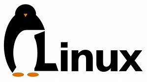

|  |
software |
Linux上的一些程序
vim是一款备受赞誉的命令行界面的文本编辑器。它是由Bram Moolenaar编写。同时也是一款跨平台的文本编辑器。你可以在windows, Mac OS X, Linux, UNIX上使用它。vim的主要特色在于它是一款纯命令行软件，软件中的几乎所有操作都要通过命令完成。vim默认不支持图像界面。在vim下，使用者可以同时打开多个文件进行编辑，使用相关的命令在文件之间切换。同时，vim支持多种插件，支持语法高亮。用户还可以通过自定义配置（这通常通过.vimrc文件完成）以及安装种类繁多的插件来拓展vim的功能。高度的可操作性和可拓展性是的vim从众多的文本编辑器中脱颖而出。 apt-get是ubuntu以及Debian等Linux版本下的应用安装软件，用户可用通过apt-get指令轻松快捷的访问相应的reposities来获取自己所需要的软件以及更新。常用的apt-get指令有install, update, remove, upgrade等等。关于apt-get的更多信息可以通过man apt-get指令查阅apt-get的用户手册。当然，apt-get指令需要在root权限下执行。 yum（或dnf）是RedHat旗下的Linux发行版本所使用的软件安装程序。它的操作与apt-get类似。关于yum（或dnf）的具体用法同样可以通过在终端中查询手册得到。 su命令能够使你以root用户登陆。用于获取root权限。当然，登陆root用户需要密码。 sudo命令与su类似，这个命令仅限于拥有root授权的用户使用。能够是一个非root用户以root权限执行相应的程序。但前提是该用户是一名经root授权的用户。出于安全考虑，在命令行中第一次使用sudo命令会要求输入该用户的密码用于验证身份。一段时间不使用sudo命令后再次输入同样需要输入密码。 |
|
written by joel, have fun using Linux! :D |
|